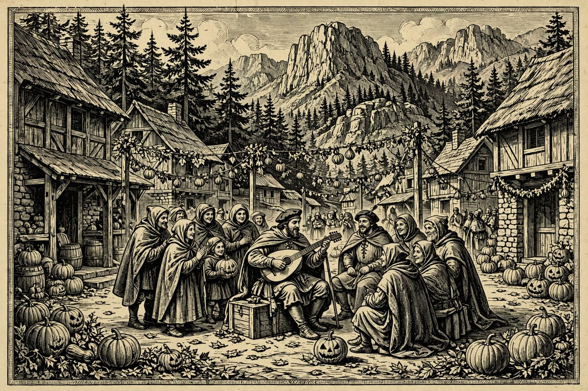
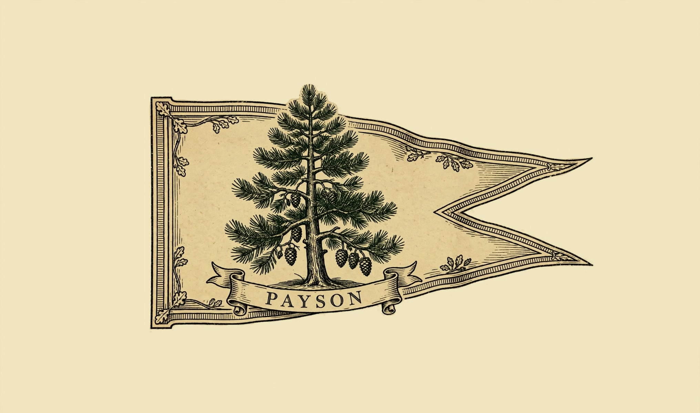
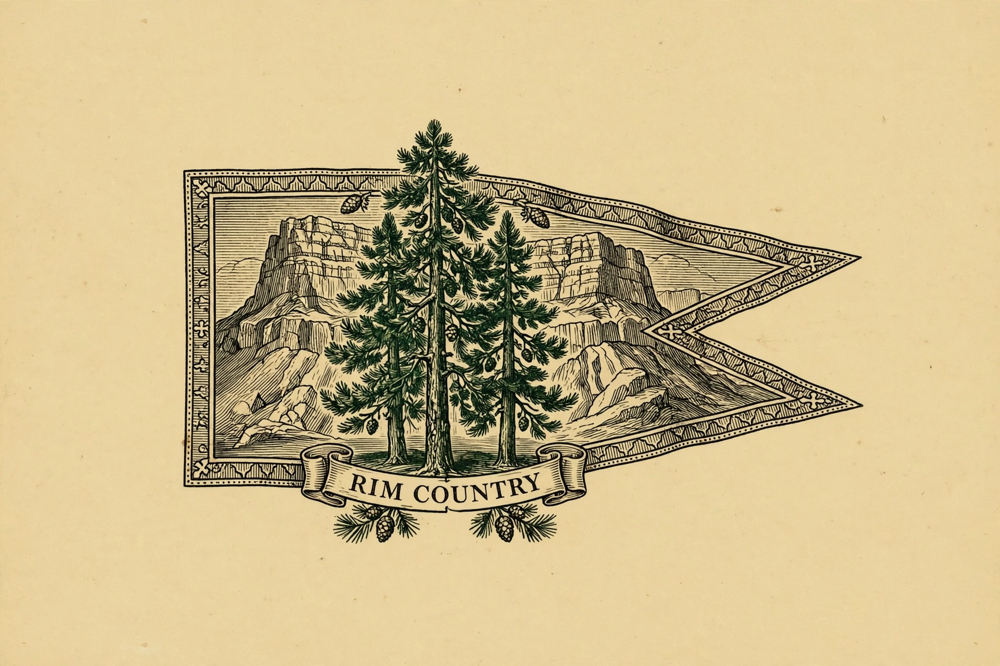
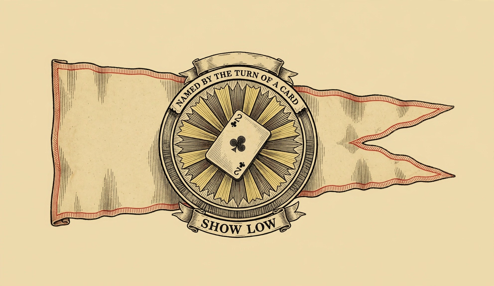

PAYSON — Hail, wayfarer, and good Morndas to you! Grey clouds ride over the Rim this morning, yet the Holds are merry: bards tune up in Pine tonight, the library in Payson keeps its doors wide, story time rings out in Show Low, and Sedona hangs fresh paintings still smelling of pine air. All week the road runs toward Halloween — trail work, murals, gravel racers, and a lantern-lit fort await. Draw up a chair, pour something warm, and plan your week by the Nine.
Happening in the Holds Today

Payson— Payson Public Library — Tai Chi and Sit & Stitch — The library at 328 N. McLane Road opens the week in its usual kindly way, with Tai Chi in the morning and the Sit & Stitch circle later in the day. Bring a project, borrow a book, or simply sit a spell among neighbors. It is the quiet, friendly start to a busy Halloween week, and the staff are glad to point guests toward more doings about town. To register for library events, call 928-474-9260.
Pine-Strawberry— Open Mic Night: Music with a Purpose — THAT Brewery & Pub, Pine — Tonight from 4 o’clock at 3270 N. Highway 87, the microphones open and the whole village is the band. Rotating members of the Pine Strawberry Fuel Reduction team host the evening, and tips go to their work keeping the forest safer for everyone. Sing a song, tell a tale, or just cheer the brave — a mead-hall night in the pines, with a good cause in every cup.- Sedona— Sedona Plein Air Exhibition Opens — Fresh from the festival fields, the paintings made outdoors among the red rocks go on show today, running through November 22. Artists spent the festival chasing desert light, and now guests can walk the walls at leisure and see the canyons as a painter’s eye caught them. A fine, unhurried stop paired with a stroll through Sedona’s galleries and courtyards.

Show Low— Story Time — Show Low Public Library — Mondays at 10:00 to 10:30 in the morning, the Kids Room fills with picture books, songs, and small happy chaos. The free drop-in session is made for ages 0 to 5 and builds the first steps toward reading, one story at a time. No sign-up is needed — just bring your smallest traveler. For word, call the library at 928-532-4070.
The Days Ahead
- Tue, Oct. 27— Trail Day Volunteer Build — Pine — From 7 in the morning to noon off Highway 87 in Pine, volunteers clear brush, move rocks, and shape a trail built to serve the Hold for years. The work also opens better access for firefighters, so every armful of brush does double duty. Tools are provided; bring water, sunscreen, gloves, and sturdy shoes. To volunteer, write to trails@psfuelreduction.org for directions.
- Thu, Oct. 29— Halloween Spooktacular Carnival — Show Low Public Library — The library turns carnival at 3 o’clock, with games, activities, treats for everyone, and a costume contest at 4 o’clock with fun prizes. Ghosts, goblins, and one very serious small dragon or two are all welcome. It is free family fun in the heart of Show Low, and a fine warm-up for the big night itself.— Marigold Mural Project Begins — Tlaquepaque, Sedona — From today through November 1, visitors are invited to paint a tribute to a loved one on the community remembrance wall at Tlaquepaque Arts & Shopping Village. The mural grows flower by flower all week, bright marigolds against the courtyards and sycamores. Come add a name, a color, and a memory — the village supplies the wall, you supply the heart.
- Fri, Oct. 30— Prescott — The Rough Rider Gravel Race Begins — Three days of wild riding open today at Prescott Courthouse Square, 120 South Cortez Street, and run through Sunday, November 1. This bold new three-stage gravel race sends riders out over high-desert roads and brings them home to historic downtown each day. Not riding? The square itself is the show — cheer the starts, watch the finishes, and enjoy Prescott at its autumn best.
- Sat, Oct. 31— A Haunting at the Fort — Fort Verde State Historic Park, Camp Verde — From 6 to 8 in the evening at 125 E. Hollamon Street, the old fort opens after hours for a ghostly lantern-lit walk. Hear the ghost stories, wander the parade ground by lantern glow, and visit with those who, the rangers say, still call the fort home after 150 years. Spooky, merry, and made for Halloween night itself.— Uptown Trick or Treat — Sedona — From 5 to 8 in the evening along Uptown Sedona, 200 N. State Route 89A, the shops open their doors to costumed travelers great and small. Bring a bag, mind the ghouls, and gather sweets beneath the red rocks as the light fades. A beloved Sedona Halloween custom, right in the heart of town.— Morning Café — Unity of Payson — Start Halloween morning gently at 9:30, in person at 110 E. Bonita Street in Payson or by Zoom from your own fireside. Morning Café is an inspirational hour of talk and good company to open the day. Costumes are not required — but by the Nine, nobody will stop you.
- Sun, Nov. 1— Día de los Muertos — Tlaquepaque, Sedona — Sedona closes the week in remembrance and celebration, with altars, music, and cultural performances honoring loved ones who have died. The Marigold Mural, painted by visitors all week, stands at the heart of it. Go gently, go gladly — this is one of the most beautiful days of the Sedona year.